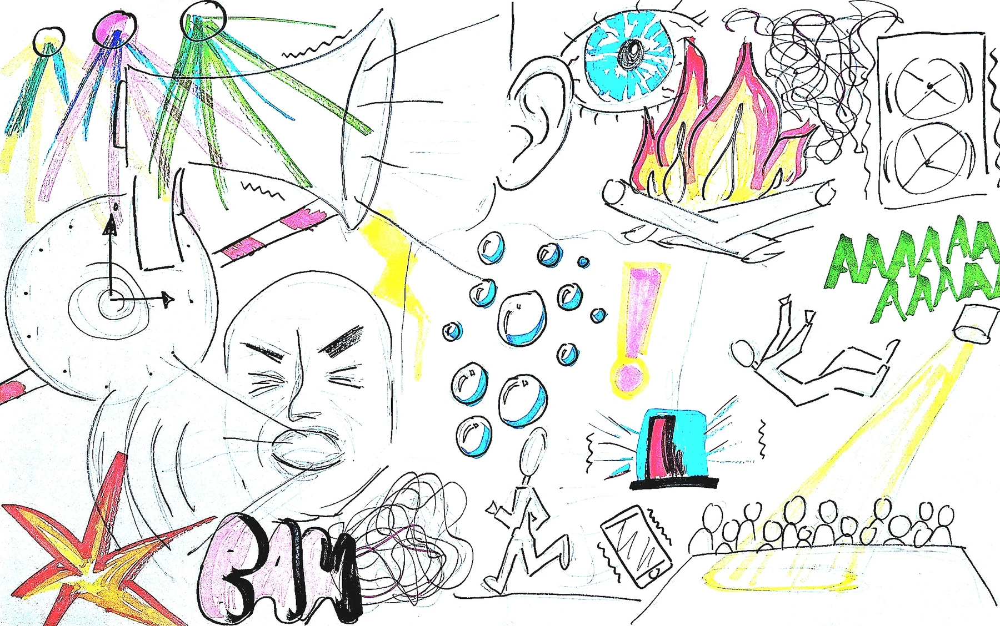
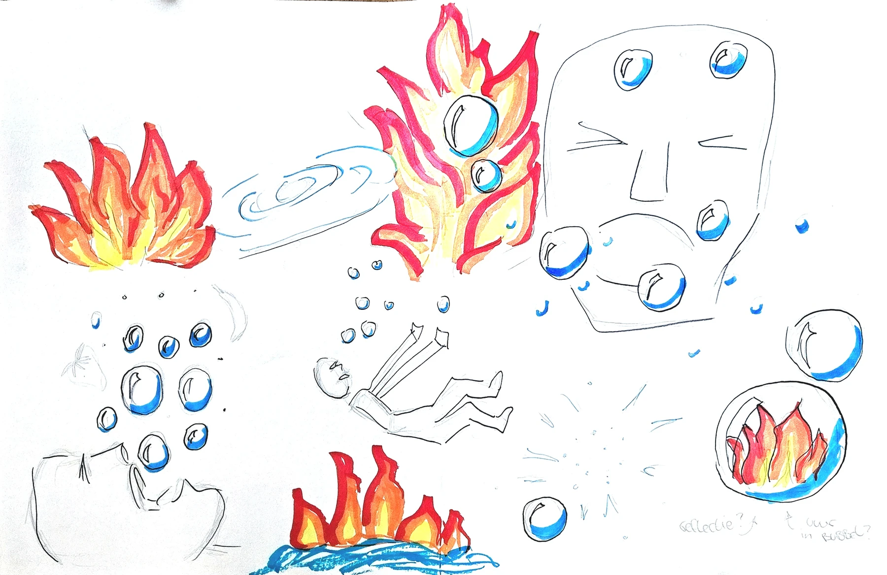

Schetsen & Thema
Ik begon met brainstormen en schetsen rondom het woord ‘schreeuwend’. Als je onder water schreeuwt, ontstaan er belletjes van lucht: daar zag ik meteen een leuk verhaal in.
Uit feedback van anderen bleek dat vuur juist als heel schreeuwend werd ervaren. Door het rustige water te combineren met vurig oranje, ontstond een spannend contrast dat de basis werd voor het hele merk.

